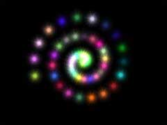

|
第09課 |
 |
|  |
3D空間中移動圖像:
你想知道如何在3D空間中移動物體，你想知道如何在屏幕上繪製一個圖像，而讓圖像的背景色變為透明，你希望有一個簡單的動畫。這一課將教會你所有的一切。前面的課程涵蓋了基礎的OpenGL，每一課都是在前一課的基礎上創建的。這一課是前面幾課知識的綜合，當你學習這課時，請確保你已經掌握了前面幾課的知識。 |
|
 |
 |
歡迎進入第九課。到現在為止，您應該很好的理解OpenGL了。『CKER：如果沒有的話，一定是我翻譯的罪過......』。您已經學會了設置一個OpenGL窗口的每個細節。學會在旋轉的物體上貼圖並打上光線以及混色(透明)處理。這一課應該算是第一課中級教程。您將學到如下的知識：在3D場景中移動位圖，並去除位圖上的黑色象素(使用混色)。接著為黑白紋理上色，最後您將學會創建豐富的色彩，並把上過不同色彩的紋理相互混合，得到簡單的動畫效果。
我們在第一課的代碼基礎上進行修改。先在程序源碼的開始處增加幾個變量。出於清晰起見，我重寫了整段代碼。 |
|
#include <stdio.h> // 標準輸入輸出庫頭文件
#include <glaux.h> // GLaux庫的頭文件
|
下列這幾行新加的。twinkle和 tp是布爾變量, 表示它們只能設為 TRUE 或 FALSE。
twinkle用來跟蹤 閃爍 效果是否啟用。 tp用來檢查 'T'鍵有沒有被按下或鬆開. (按下時 tp=TRUE, 鬆開時 tp=FALSE). |
|
BOOL twinkle; // 閃爍的星星
BOOL tp; // 'T' 按下了麼?
|
num 跟蹤屏幕上所繪製的星星數。這個數字被定義為一個常量。這意味著無法在以後的代碼中對其進行修改。這麼做的原因是因為您無法重新定義一個數組。因此，如果我們定義一個50顆星星的數組，然後又將num增加到51的話，就會出錯『CKER：數組越界』。不過您還是可以(也只可以)在這一行上隨意修改這個數字。但是以後請您別再改動
num 的值了，除非您想看見災難發生。 |
|
const num=50; // 繪製的星星數
|
現在我們來創建一個結構。 結構這詞聽起來有點可怕，但實際上並非如此。 一個結構使用一組簡單類型的數據
(以及變量等)來表達較大的具有相似性的數據組合。 我們知道我們在保持對星星的跟蹤。 您可以看到下面的第七行就是 stars；並且每個星星有三個整型的色彩值。第三行
int r,g,b設置了三個整數. 一個紅色 (r), 一個綠色 (g), 以及一個藍色 (b). 此外，每個星星離屏幕中心的距離不同, 而且可以是以屏幕中心為原點的任意360度中的一個角度。如果你看下面第四行的話,
會發現我們使用了一個叫做 dist的浮點數來保持對距離 的跟蹤. 第五行則用一個叫做 angle的浮點數保持對星星角度值的跟蹤。
因此我們使用了一組數據來描述屏幕上星星的色彩, 距離, 和角度。 不幸的是我們不止對一個星星進行跟蹤。但是無需創建 50 個紅色值、 50
個綠色值、 50 個藍色值、 50 個距離值 以及 50 個角度值，而只需創建一個數組star。 star數組的每個元素都是stars類型的，裡面存放
了描述星星的所有數據。star數組在下面的第八行創建。 第八行的樣子是這樣的： stars star[num]。數組類型是 stars結構.
所數組 能存放所有stars結構的信息。 數組名字是 star. 數組大小是 [num]。 數組中存放著 stars結構的元素. 跟蹤結構元素會比跟蹤各自分開的變量容易的多.
不過這樣也很笨, 因為我們竟然不能改變常量 num來增減星星 數量。
|
|
typedef struct // 為星星創建一個結構
{
int r, g, b; // 星星的顏色
GLfloat dist; // 星星距離中心的距離
GLfloat angle; // 當前星星所處的角度
}
stars; // 結構命名為stars
stars star[num]; // 使用 'stars' 結構生成一個包含 'num'個元素的 'star'數組
|
接下來我們設置幾個跟蹤變量：星星離觀察者的距離變量(zoom)，我們所見到的星星所處的角度(tilt)，以及使閃爍的星星繞Z軸自轉的變量spin。
loop變量用來繪製50顆星星。texture[1]用來存放一個黑白紋理。如果您需要更多的紋理的話，您應該增加texture數組的大小至您決定採用的紋理個數。 |
|
GLfloat zoom=-15.0f; // 星星離觀察者的距離
GLfloat tilt=90.0f; // 星星的傾角
GLfloat spin; // 閃爍星星的自轉
GLuint loop; // 全局 Loop 變量
GLuint texture[1]; // 存放一個紋理
|
緊接著上面的代碼就是我們用來載入紋理的代碼。我不打算再詳細的解釋這段代碼。這跟我們在第六、七、八課中所用的代碼是一模一樣的。這一次載入的位圖叫做star.bmp。這裡我們使用glGenTextures(1,
&texture[0])，來生成一個紋理。紋理採用線性濾波方式。 |
|
AUX_RGBImageRec *LoadBMP(char *Filename) // 載入位圖文件
{
FILE *File=NULL; // 文件句柄
if (!Filename) // 確認已給出文件名
{
return NULL; // 若無返回 NULL
}
File=fopen(Filename,"r"); // 檢查文件是否存在
if (File) // 文件存在麼?
{
fclose(File); // 關閉文件句柄
return auxDIBImageLoad(Filename); // 載入位圖並返回指針
}
return NULL; // 如果載入失敗返回 NULL
}
|
下面的代碼(調用上面的代碼)載入位圖，並轉換成紋理。變量用來跟蹤紋理是否已載入並創建好了。 |
|
int LoadGLTextures() // 載入位圖並轉換成紋理
{
int Status=FALSE; // 狀態指示器
AUX_RGBImageRec *TextureImage[1]; // 為紋理分配存儲空間
memset(TextureImage,0,sizeof(void *)*1); // 將指針設為 NULL
// 載入位圖，查錯，如果未找到位圖文件則退出
if (TextureImage[0]=LoadBMP("Data/Star.bmp"))
{
Status=TRUE; // 將 Status 設為TRUE
glGenTextures(1, &texture[0]); // 創建一個紋理
// 創建一個線性濾波紋理
glBindTexture(GL_TEXTURE_2D, texture[0]);
glTexParameteri(GL_TEXTURE_2D,GL_TEXTURE_MAG_FILTER,GL_LINEAR);
glTexParameteri(GL_TEXTURE_2D,GL_TEXTURE_MIN_FILTER,GL_LINEAR);
glTexImage2D(GL_TEXTURE_2D, 0, 3, TextureImage[0]->sizeX, TextureImage[0]->sizeY, 0, GL_RGB, GL_UNSIGNED_BYTE, TextureImage[0]->data);
}
if (TextureImage[0]) // 如果紋理存在
{
if (TextureImage[0]->data) // 如果紋理圖像存在
{
free(TextureImage[0]->data); // 釋放紋理圖像所佔的內存
}
free(TextureImage[0]); // 釋放圖像結構
}
return Status; // 返回 Status的值
}
|
現在設置OpenGL的渲染方式。這裡不打算使用深度測試，如果您使用第一課的代碼的話，請確認是否已經去掉了
glDepthFunc(GL_LEQUAL); 和 glEnable(GL_DEPTH_TEST);兩行。否則，您所見到的效果將會一團糟。這裡我們使用了紋理映射，因此請您確認您已經加上了這些第一課中所沒有的代碼。您會注意到我們通過混色來啟用了紋理映射。 |
|
int InitGL(GLvoid) // 此處開始對OpenGL進行所有設置
{
if (!LoadGLTextures()) // 調用紋理載入子例程
{
return FALSE; // 如果未能載入，返回FALSE
}
glEnable(GL_TEXTURE_2D); // 啟用紋理映射
glShadeModel(GL_SMOOTH); // 啟用陰影平滑
glClearColor(0.0f, 0.0f, 0.0f, 0.5f); // 黑色背景
glClearDepth(1.0f); // 設置深度緩存
glHint(GL_PERSPECTIVE_CORRECTION_HINT, GL_NICEST); // 真正精細的透視修正
glBlendFunc(GL_SRC_ALPHA,GL_ONE); // 設置混色函數取得半透明效果
glEnable(GL_BLEND); // 啟用混色
|
以下是新增的代碼。設置了每顆星星的起始角度、距離、和顏色。您會注意到修改結構的屬性有多容易。全部50顆星星都會被循環設置。要改變star[1]的角度我們所要做的只是star[1].angle={某個數值}；就這麼簡單！ |
|
for (loop=0; loop<num; loop++) // 創建循環設置全部星星
{
star[loop].angle=0.0f; // 所有星星都從零角度開始
|
第loop顆星星離中心的距離是將loop的值除以星星的總顆數，然後乘上5.0f。基本上這樣使得後一顆星星比前一顆星星離中心更遠一點。這樣當loop為50時(最後一顆星星)，loop
除以 num正好是1.0f。之所以要乘以5.0f是因為1.0f*5.0f 就是 5.0f。『CKER：廢話，廢話！這老外怎麼跟孔乙己似的！:)』5.0f已經很接近屏幕邊緣。我不想星星飛出屏幕，5.0f是最好的選擇了。當然如果如果您將場景設置的更深入屏幕裡面的話，也許可以使用大於5.0f的數值，但星星看起來就更小一些(都是透視的緣故)。
您還會注意到每顆星星的顏色都是從0∼255之間的一個隨機數。也許您會奇怪為何這裡的顏色得取值範圍不是OpenGL通常的0.0f∼1.0f之間。這裡我們使用的顏色設置函數是glColor4ub，而不是以前的glColor4f。ub意味著參數是Unsigned
Byte型的。一個byte的取值範圍是0∼255。這裡使用byte值取隨機整數似乎要比取一個浮點的隨機數更容易一些。 |
|
star[loop].dist=(float(loop)/num)*5.0f; // 計算星星離中心的距離
star[loop].r=rand()%256; // 為star[loop]設置隨機紅色份量
star[loop].g=rand()%256; // 為star[loop]設置隨機紅色份量
star[loop].b=rand()%256; // 為star[loop]設置隨機紅色份量
}
return TRUE; // 初始化一切OK
}
|
Resize的代碼也是一樣的，現在我們轉入繪圖代碼。如果您使用第一課的代碼，刪除舊的DrawGLScene代碼，只需將下面的代碼複製過去就行了。實際上，第一課的代碼只有兩行，所以沒太多東西要刪掉的。 |
|
int DrawGLScene(GLvoid) // 此過程中包括所有的繪製代碼
{
glClear(GL_COLOR_BUFFER_BIT | GL_DEPTH_BUFFER_BIT); // 清除屏幕及深度緩存
glBindTexture(GL_TEXTURE_2D, texture[0]); // 選擇紋理
for (loop=0; loop<num; loop++) // 循環設置所有的星星
{
glLoadIdentity(); // 繪製每顆星星之前，重置模型觀察矩陣
glTranslatef(0.0f,0.0f,zoom); // 深入屏幕裡面
glRotatef(tilt,1.0f,0.0f,0.0f); // 傾斜視角
|
現在我們來移動星星。星星開始時位於屏幕的中心。我們要做的第一件事是把場景沿Y軸旋轉。如果我們旋轉90度的話，X軸不再是自左至右的了，他將由裡向外穿出屏幕。為了讓大家更清楚些，舉個例子。假想您站在房子中間。再設想您左側的牆上寫著-x，前面的牆上寫著-z，右面牆上就是+x咯，您身後的牆上則是+z。加入整個房子向右轉90度，但您沒有動，那麼前面的牆上將是-x而不再是-z了。所有其他的牆也都跟著移動。-z出現在右側，+z出現在左側，+x出現在您背後。神經錯亂了吧？通過旋轉場景，我們改變了x和z平面的方向。
第二行代碼沿x軸移動一個正值。通常x軸上的正值代表移向了屏幕的右側(也就是通常的x軸的正向)，但這裡由於我們繞y軸旋轉了坐標系，x軸的正向可以是任意方向。如果我們轉180度的話，屏幕的左右側就鏡像反向了。因此，當我們沿
x軸正向移動時，可能向左，向右，向前或向後。 |
|
glRotatef(star[loop].angle,0.0f,1.0f,0.0f); // 旋轉至當前所畫星星的角度
glTranslatef(star[loop].dist,0.0f,0.0f); // 沿X軸正向移動
|
接著的代碼帶點小技巧。星星實際上是一個平面的紋理。現在您在屏幕中心畫了個平面的四邊形然後貼上紋理，這看起來很不錯。一切都如您所想的那樣。但是當您當您沿著y軸轉上個90度的話，紋理在屏幕上就只剩右側和左側的兩條邊朝著您。看起來就是一條細線。這不是我們所想要的。我們希望星星永遠正面朝著我們，而不管屏幕如何旋轉或傾斜。
我們通過在繪製星星之前，抵消對星星所作的任何旋轉來實現這個願望。您可以採用逆序來抵消旋轉。當我們傾斜屏幕時，我們實際上以當前角度旋轉了星星。通過逆序，我們又以當前角度"反旋轉"星星。也就是以當前角度的負值來旋轉星星。就是說，如果我們將星星旋轉了10度的話，又將其旋轉-10度來使星星在那個軸上重新面對屏幕。下面的第一行抵消了沿y軸的旋轉。然後，我們還需要抵消掉沿x軸的屏幕傾斜。要做到這一點，我們只需要將屏幕再旋轉-tilt傾角。在抵消掉x和y軸的旋轉後，星星又完全面對著我們了。 |
|
glRotatef(-star[loop].angle,0.0f,1.0f,0.0f); // 取消當前星星的角度
glRotatef(-tilt,1.0f,0.0f,0.0f); // 取消屏幕傾斜
|
如果 twinkle 為 TRUE，我們在屏幕上先畫一次不旋轉的星星：將星星總數(num)
減去當前的星星數(loop)再減去1，來提取每顆星星的不同顏色(這麼做是因為循環範圍從0到num-1)。舉例來說，結果為10的時候，我們就使用10號星星的顏色。這樣相鄰星星的顏色總是不同的。這不是個好法子，但很有效。最後一個值是alpha通道份量。這個值越小，這顆星星就越暗。
由於啟用了twinkle，每顆星星最後會被繪製兩遍。程序運行起來會慢一些，這要看您的機器性能如何了。但兩遍繪製的星星顏色相互融合，會產生很棒的效果。同時由於第一遍的星星沒有旋轉，啟用twinkle後的星星看起來有一種動畫效果。(如果您這裡看不懂得話，就自己去看程序的運行效果吧。)
值得注意的是給紋理上色是件很容易的事。儘管紋理本身是黑白的，紋理將變成我們在繪製它之前選定的任意顏色。此外，同樣值得注意的是我們在這裡使用的顏色值是byte型的，而不是通常的浮點數。甚至alpha通道份量也是如此。 |
|
if (twinkle) // 啟用閃爍效果
{
// 使用byte型數值指定一個顏色
glColor4ub(star[(num-loop)-1].r,star[(num-loop)-1].g,star[(num-loop)-1].b,255);
glBegin(GL_QUADS); // 開始繪製紋理映射過的四邊形
glTexCoord2f(0.0f, 0.0f); glVertex3f(-1.0f,-1.0f, 0.0f);
glTexCoord2f(1.0f, 0.0f); glVertex3f( 1.0f,-1.0f, 0.0f);
glTexCoord2f(1.0f, 1.0f); glVertex3f( 1.0f, 1.0f, 0.0f);
glTexCoord2f(0.0f, 1.0f); glVertex3f(-1.0f, 1.0f, 0.0f);
glEnd(); // 四邊形繪製結束
}
|
現在繪製第二遍的星星。唯一和前面的代碼不同的是這一遍的星星肯定會被繪製，並且這次的星星繞著z軸旋轉。 |
|
glRotatef(spin,0.0f,0.0f,1.0f); // 繞z軸旋轉星星
// 使用byte型數值指定一個顏色
glColor4ub(star[loop].r,star[loop].g,star[loop].b,255);
glBegin(GL_QUADS); // 開始繪製紋理映射過的四邊形
glTexCoord2f(0.0f, 0.0f); glVertex3f(-1.0f,-1.0f, 0.0f);
glTexCoord2f(1.0f, 0.0f); glVertex3f( 1.0f,-1.0f, 0.0f);
glTexCoord2f(1.0f, 1.0f); glVertex3f( 1.0f, 1.0f, 0.0f);
glTexCoord2f(0.0f, 1.0f); glVertex3f(-1.0f, 1.0f, 0.0f);
glEnd(); // 四邊形繪製結束
|
以下的代碼代表星星的運動。我們增加spin的值來旋轉所有的星星(公轉)。然後，將每顆星星的自轉角度增加loop/num。這使離中心更遠的星星轉的更快。最後減少每顆星星離屏幕中心的距離。這樣看起來，星星們好像被不斷地吸入屏幕的中心。 |
|
spin+=0.01f; // 星星的公轉
star[loop].angle+=float(loop)/num; // 改變星星的自轉角度
star[loop].dist-=0.01f; // 改變星星離中心的距離
|
接著幾行檢查星星是否已經碰到了屏幕中心。當星星碰到屏幕中心時，我們為它賦一個新顏色，然後往外移5個單位，這顆星星將踏上它回歸屏幕中心的旅程。 |
|
if (star[loop].dist<0.0f) // 星星到達中心了麼
{
star[loop].dist+=5.0f; // 往外移5個單位
star[loop].r=rand()%256; // 賦一個新紅色份量
star[loop].g=rand()%256; // 賦一個新綠色份量
star[loop].b=rand()%256; // 賦一個新藍色份量
}
}
return TRUE; // 一切正常
}
|
現在我們添加監視鍵盤的代碼。下移到WinMain()。找到SwapBuffers(hDC)一行。我們就在這一行後面增加鍵盤監視代碼。
代碼將檢查T鍵是否已按下。如果T鍵按下過，並且又放開了，if塊內的代碼將被執行。如果twinkle為FALSE，他將變為TRUE。反之亦然。只要T鍵按下，
tp就變為TRUE。這樣處理可以防止如果您一直按著T鍵的話，塊內的代碼被反覆執行。 |
|
SwapBuffers(hDC); // 切換緩衝
if (keys['T'] && !tp) // 是否T 鍵已按下並且 tp值為 FALSE
{
tp=TRUE; // 若是，將tp設為TRUE
twinkle=!twinkle; // 翻轉 twinkle的值
}
|
下面的代碼檢查是否鬆開了T鍵。若是，使 tp=FALSE。除非tp的值為FALSE，否則按著T鍵時什麼也不會發生。所以這行代碼很重要。 |
|
if (!keys['T']) // T 鍵已鬆開了麼？
{
tp=FALSE; // 若是 ，tp為 FALSE
}
|
餘下的代碼檢查上、下方向鍵，向上翻頁鍵或向下翻頁鍵是否按下。 |
|
if (keys[VK_UP]) // 上方向鍵按下了麼？
{
tilt-=0.5f; // 屏幕向上傾斜
}
if (keys[VK_DOWN]) // 下方向鍵按下了麼？
{
tilt+=0.5f; // 屏幕向下傾斜
}
if (keys[VK_PRIOR]) // 向上翻頁鍵按下了麼
{
zoom-=0.2f; // 縮小
}
if (keys[VK_NEXT]) // 向下翻頁鍵按下了麼？
{
zoom+=0.2f; // 放大
}
|
像以前一樣，確認窗口的標題是否正確。 |
|
if (keys[VK_F1]) // F1鍵按下了麼?
{
keys[VK_F1]=FALSE; // 若是，使對應的Key數組中的值為 FALSE
KillGLWindow(); // 銷毀當前的窗口
fullscreen=!fullscreen; // 切換 全屏 / 窗口 模式
// 重建 OpenGL 窗口
if (!CreateGLWindow("NeHe's 透明紋理實例",640,480,16,fullscreen))
{
return 0; // 如果窗口未能創建，程序退出
}
}
}
}
|
這一課我盡我所能來解釋如何加載一個灰階位圖紋理，(使用混色)去掉它的背景色後，再給它上色，最後讓它在3D場景中移動。我已經向您展示了如何創建漂亮的顏色與動畫效果。實現原理是在原始位圖上再重疊一份位圖拷貝。到現在為止，只要您很好的理解了我所教您的一切，您應該已經能夠毫無問題的製作您自己的3D
Demo了。所有的基礎知識都已包括在內！
 |
版權與使用聲明:
我是個對學習和生活充滿激情的普通男孩,在網絡上我以DancingWind為暱稱，我的聯繫方式是zhouwei02@mails.tsinghua.edu.cn，如果你有任何問題，都可以聯繫我。
引子
網絡是一個共享的資源，但我在自己的學習生涯中浪費大量的時間去搜索可用的資料，在現實生活中花費了大量的金錢和時間在書店中尋找資料，於是我給自己起了個暱稱DancingWind，其意義是想風一樣從各個知識的站點中吸取成長的養料。在飄蕩了多年之後，我決定把自己收集的資料整理為一個統一的資源庫。
版權聲明
所有DancingWind發表的內容，大多都來自共享的資源，所以我沒有資格把它們據為己有，或聲稱自己為這些資源作出了一點貢獻。故任何人都可以複製，修改，重新發表，甚至以自己的名義發表，我都不會追究，但你在做以上事情的時候必須保證內容的完整性，給後來的人一個完整的教程。最後，任何人不能以這些資料的任何部分，謀取任何形式的報酬。
發展計劃
在國外，很多資料都是很多人花費幾年的時間慢慢積累起來的。如果任何人有興趣與別人共享你的知識，我很歡迎你與我聯繫，但你必須同意我上面的聲明。
感謝
感謝我的母親一直以來對我的支持和在生活上的照顧。
感謝我深愛的女友田芹，一直以來默默的在精神上和生活中對我的支持，她甚至把買衣服的錢都用來給我買書了，她真的是我見過的最好的女孩，希望我能帶給她幸福。
資源下載:
文檔 網頁格式
PDF格式
源碼 RAR格式 |
|
|